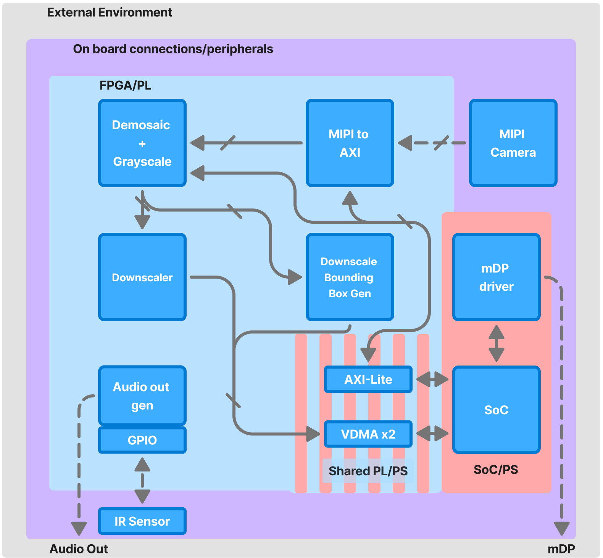
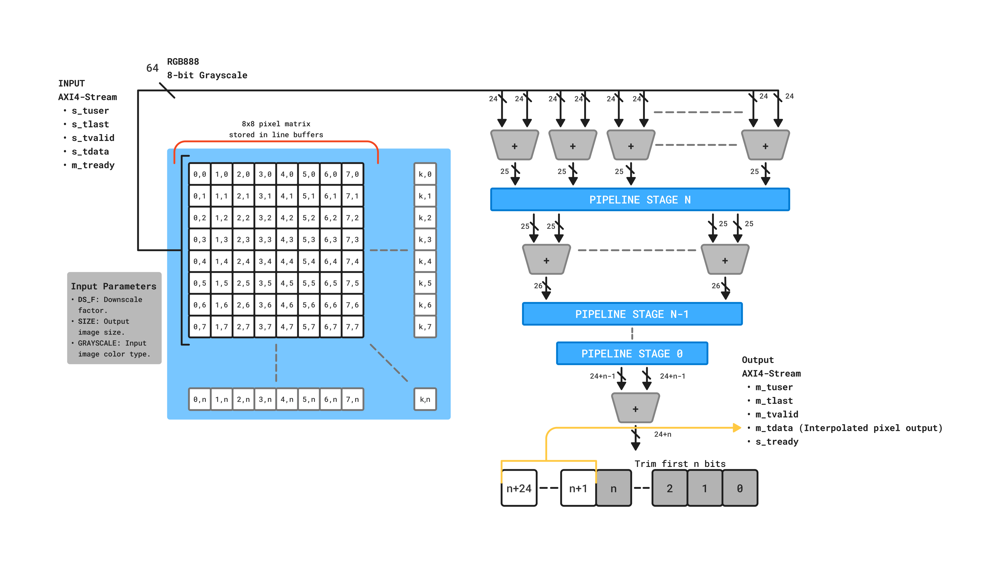

FAST-AR
FAST-AR is a gesture inference accelerator based on the AUP-ZU3 FPGA/SoC. It uses custom IP to reduce problem size and manage peripheral and camera connections, freeing up valuable SoC/PS compute power.
Demo
iodwajdoiwajdoiwajdioawjdioawjdiow

Gesture Acceleration Hardware
Our custom RTL downscaler processes 1080p RAW8 data in 76.8 µs.
By utilizing a parameterizable adder tree, we achieved zero DSP slice
utilization.
The downscaler also maintains timing closure up to at least 200MHz due to automatic pipelining.

System Overview
This system is designed as a Heterogenous System-on-Chip (SoC) co-design using both programmable logic (FPGA/PL) and a processing system (SoC/PS) for gesture acceleration, supported by an external SoC for video pipeline.